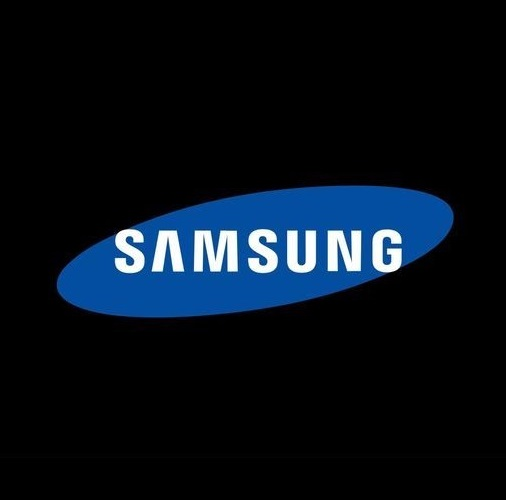
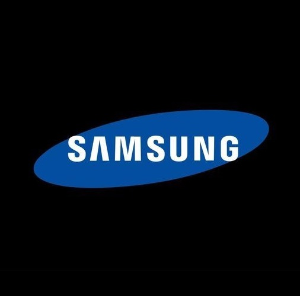

Doorstep Laptop Service in Chennai
Doorstep Pick Up & Delivery Service
Trained Technicians | No Contract
Affordable Pricing | Payment after Service
98% Success Rate & Fast Service
180 Days Service Warranty

Doorstep Pick Up & Delivery Service
Trained Technicians | No Contract
Affordable Pricing | Payment after Service
98% Success Rate & Fast Service
180 Days Service Warranty
Chip Level Service
Broken Laptop Fix
Hardware Installations
Laptop Spares
Laptop Speed Up
Software Corruption
Free Pick Up & Delivery
Professional Service
Service Warranty
Affordable Pricing
| Service | Price( Laptop/Computer) |
|---|---|
| Laptop Display Replacement (New) | 1500-5000/- |
| Keyboards/Trackpad Replacement | 800-2500/- |
| Motherboard service | 500-2000/- |
| Battery/CMOS problems | 1500-4000/- |
| Hard Disk Replacement | 500-2000/- |
| SSD Installation | 1800-8000/- |
| Software up-grade & virus removal | 500-2000/- |
| OS Installation (Genuine) | 400-1500/- |
“Fast, Good, and Cheap When your laptop breaks, you need a good repair. AMIT Services is the best Laptop Service Center in Chennai. We can fix many hardware problems for famous brands like Dell, HP, Lenovo, Acer, and Asus. We can change screens or batteries, and we take good care of every part, including RAM & ROM. Our Laptop Repair services in Chennai are fast, good, and cheap. We promise to use only high-quality parts and give you a 90-day warranty on our work. Trust us to make your laptop work well again quickly.
Find and Fix Problems The motherboard is the main part of your laptop. It controls other important parts like the CPU, RAM, and graphics card. Problems with the motherboard can make your laptop slow, unstable, or not work at all. At AMIT Services, we are the best laptop chip level service providers in Chennai for motherboard repairs. Our skilled technicians can solve hard motherboard problems, using smart tools to find and fix the causes. We are honest, giving you a free check and price for our Laptop repair, so you can decide what to do for your device.
Looking to make your laptop faster and smoother? AMIT Services is your perfect Laptop Solution for easy SSD and hard disk upgrades. We can speed up your laptop, making it start faster, do more things at once, and store more files. You can choose from the super-fast SSD, which is quick and strong, or the cheap HDD, which has a lot of space. Our Laptop Service in Chennai does good SSD installation Service, making sure your laptop works at its best. We can also help you move your old data to the new drive, making your laptop faster and safer. For the best Laptop Repair in Chennai, trust our skills to improve your computer experience.
Fix and Update Your Laptop Software Keeping your laptop’s software in good shape is important for smooth working and safety. This includes the operating system, different programs, drivers, and updates. Old, bad, or infected software can make your laptop slow, wrong, crash, or open to viruses. AMIT Services is the top expert laptop repair center in Chennai for complete software support. We do careful fixing, new software installations, and solving any software problems. We can help you with starting new programs or removing unwanted ones, or setting up important software like antivirus and office programs. We also suggest the best software for your laptop and your needs.
Opt for excellence in laptop care with AMIT Services – your premier choice for top-tier laptop service in Chennai. Our dedicated team of experts merges technical proficiency with personalized attention, guaranteeing swift and dependable solutions for all your laptop requirements. As the leading Laptop Service Center in Chennai, rely on AMIT Services for excellence in every laptop fix – your satisfaction is our commitment to delivering the ultimate laptop repair in Chennai.


 
